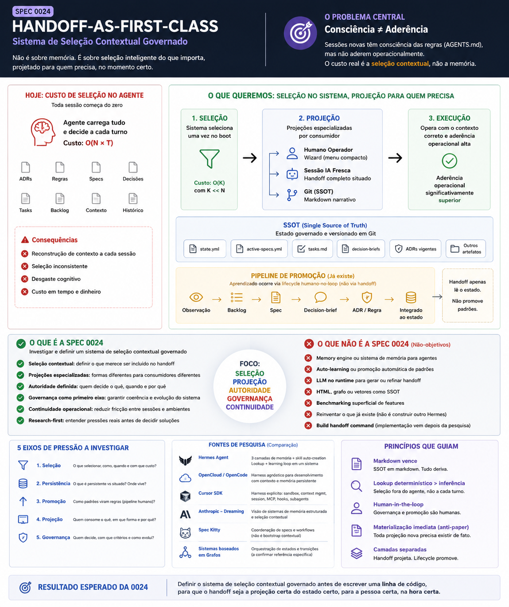
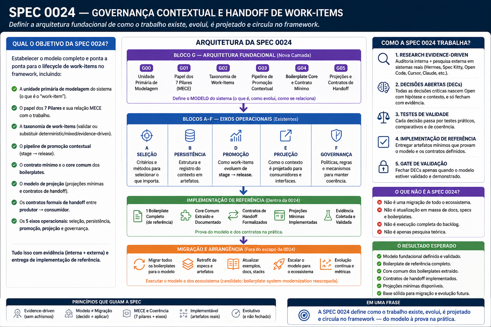

Spec
O objetivo completo de produto/arquitetura. Aqui: Spec 0024 inteira.
Mapa operacional experimental · não é SSOT
Este mapa mostra como acompanhar a Spec 0024 usando
Spec > Fase > Checkpoint > Etapa > Tarefa, separando valor
entregue, PR principal, PRs relacionados, evidências e imagens. Ele testa a linguagem
antes da DEC; em caso de divergência, continuam vencendo state.yml,
tasks.md, Git/GitHub e os comandos governados.
A hierarquia abaixo é de linguagem humana. Ela não exige que todos os níveis apareçam em todos os casos. Letras identificam hierarquia; cores identificam apenas status.
O objetivo completo de produto/arquitetura. Aqui: Spec 0024 inteira.
Grande frente sequencial da spec. Substitui a leitura humana de "nó topológico".
Entrega governada e revisável. Normalmente tem PR próprio ou parte clara de um PR.
Divisão opcional dentro de um checkpoint grande. Substitui "sub-checkpoint".
Item executável ou evidência de conclusão. É folha, não camada de autoridade.
A proposta precisa evitar burocracia: o vocabulário organiza o que existe, mas não força uma profundidade fixa.
Uma Fase pequena pode ter só tarefas ou um checkpoint único. Ela não precisa ter etapas.
Quando a entrega é grande, o checkpoint pode ser dividido em Etapas para preservar review e Human Gate sem perder contexto.
PR é o contêiner de revisão no GitHub. O ideal é que cada checkpoint tenha um PR principal claro; quando houver vários PRs, o mapa precisa explicar a relação.
O mapa separa o que fecha uma entrega do que apenas preparou, influenciou ou carregou contexto histórico. Isso evita que o PR vire uma unidade de autoridade do lifecycle.
Contêiner onde o checkpoint foi ou será fechado. Deve concentrar revisão, evidência e valor entregue daquela unidade.
PRs que prepararam, investigaram, migraram ou influenciaram o checkpoint. Eles ajudam a entender a história, mas não fecham a entrega atual.
Se um checkpoint precisa de muitos PRs para ser entendido, o próximo modelo deve quebrá-lo em checkpoints menores ou promovê-lo a Fase.
Esta leitura reagrupa a história real da Spec 0024 em Fases humanas. Os nomes internos antigos aparecem apenas como ponte.
Do bootstrap da spec ao gate inicial de research/decision brief.
Criação da spec, plano, tasks, decision brief e PR #32 como linha de integração.
spec.md, plan.md, tasks.md, decision
brief.
Aposentou "PR-N" como unidade interna e consolidou Checkpoint/Gate antes do V3.
state.yml.
No V3, este checkpoint teria sido narrado como ajuste de vocabulário e topologia; a numeração histórica vira apenas ponte.
Transformou regras, topologia e reviews em superfícies verificáveis.
Regras/produtibilidade, topologia e checks deixaram de depender de narrativa solta.
Findings, resolutions, fingerprints e gates passaram a ser versionados e auditáveis.
Este é um caso em que um mesmo PR carregou mais de um checkpoint coeso. O mapa mantém a separação por valor entregue, não por número do PR.
Base para conhecimento governado, comandos reais e runtime distribuível.
KnowledgeRef, falsificação, grafo e capability de insights viraram base do framework.

assets/pr-value-images/pr-37.png.

assets/overview.png. Handoff como projeção, não fonte
de verdade.
O registry passou a governar comandos/help; o bootstrap ganhou empacotamento e contratos.
Este é um exemplo de checkpoint que, no V3, provavelmente seria quebrado em checkpoints menores. Os PRs relacionados explicam a trajetória, não a autoridade.

assets/pr-value-images/pr-35.png.

assets/pr-value-images/pr-38.png.
Reduziu a dependência de memória humana entre retomadas, checks e runtime.
npm puro, PR body/checks, handoff situado e reviews opcionais/obrigatórios por policy.

assets/pr-value-images/pr-41.png.

assets/vision-three-layers.png. Onde automação termina
e decisão humana começa.
Constraints, receipts, runtime CLI em TypeScript e remoção da ponte legacy imediata.

assets/pr-value-images/pr-42.png.Modelou o lifecycle ponta a ponta e expôs a CLI pública como experiência guiada.
Inventário real, confronto modelo × código, correções, dogfood e fluxo de time.

assets/pr-value-images/pr-43.png.

assets/overview-v2.png. Visão histórica da Spec 0024
como arquitetura do lifecycle de work-items.
`npx ai-guidelines`, site/simulador, harness de consumidor e revisão externa pré-Human Gate.
O PR #43 fechou dois checkpoints grandes porque era um recorte de convergência. No V3, isso continuaria possível, mas exigiria explicitar a fronteira de cada entrega no body e no mapa.
Onde estamos agora: dogfood de drift, decisão de modelo e implementação da taxonomia/model-review.
Governance Doctor, reparo seguro de branch stale, classificação dos demais desencontros e rota pública avançada.
repair, tracker, rota avançada e classificação dos 8
drifts.

assets/pr-value-images/pr-44.png. Para detalhe
operacional, abrir drift-tracker.html.
DEC-0024-G21 e GG-0005: sem débito arquitetural silencioso; PR #44 fecha decisão, não implementação pesada.
DEC-0024-G21, GG-0005, inventário e mapa
V2.
PR #45. Antes da taxonomia: decidir vocabulário V3 e criar operação governada para abrir o próximo PR interno.

assets/pr-value-images/pr-45.png. Projeção visual do PR
#45; não substitui state.yml, DEC, testes ou review.
Organizar o runtime e provar o lifecycle em jornadas reais antes do gate final.
Reorganização behavior-preserving do runtime, testes e BDD visual.
Jornadas completas, revisão independente e Human Gate da continuação do fluxo.
Após a continuação estar modelada e falsificada, remover pontes e automatizar.
Migrar `.specify` e `.ai-guidelines` para a estrutura canônica sem quebrar ADRs.
Captura contínua, dispatcher de eventos, remoção de legado e prontidão de conhecimento.
Homologação final e merge único em main, depois dos gates humanos aplicáveis.
Integração terminal da spec. Não substitui os Human Gates das fases anteriores e não autoriza merge antecipado.
review.md, release-log.md, CI final e gate
terminal.
Esta tabela mostra como a linguagem antiga seria lida se o vocabulário final existisse desde o começo.
| Termo usado historicamente | Leitura no V3 | Observação |
|---|---|---|
| nó topológico / CO / frente macro | Fase | A topologia ainda vive em state.yml; "Fase" é o nome humano. |
| checkpoint semântico | Checkpoint | Entrega governada e revisável, normalmente com PR próprio ou fronteira clara. |
| sub-checkpoint / CO-10.7 / CO-3.5 | Etapa | Usar só quando o checkpoint é grande demais para uma lista plana de tarefas. |
| item de checklist / validação / evidência | Tarefa | Folha executável ou comprovação; não deve carregar autoridade estrutural. |
| PR #N | Contêiner de revisão | Continua sendo GitHub PR real. Não é Fase, Checkpoint nem Etapa. |
Se esta leitura fizer sentido, a DEC de vocabulário deve cravar que Fase é o nome humano para a macro-sequência da spec, Checkpoint é a entrega governada, Etapa é opcional dentro de checkpoints grandes e Tarefa é folha. Também deve declarar que PR continua sendo contêiner de revisão, não unidade de autoridade do lifecycle.